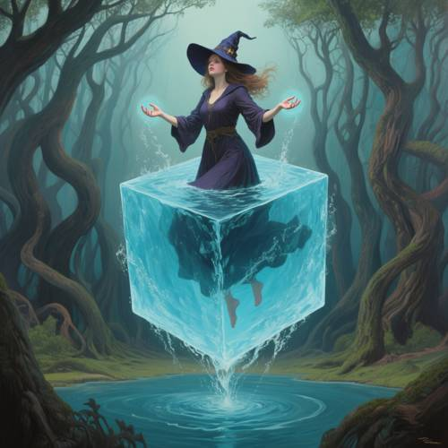
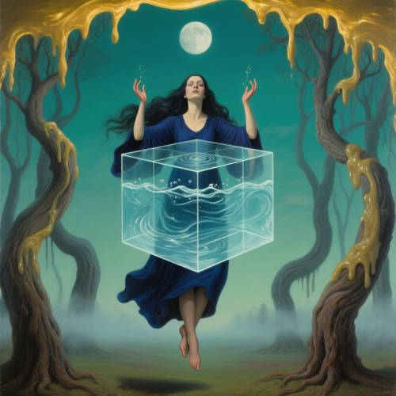
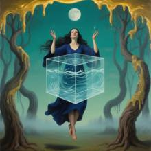

Entity Layout — Please generate a painting: a female wizard floating in mid-air, summo
Please generate a painting: a female wizard floating in mid-air, summoning a huge cubic mass of water with her hands, with a distorted forest in the background, in a surrealist style.

Direct — one call, no iteration

Continuum — Kimi K3 + Qwen-Image
Judge — Direct
PASSEntity Layout - Three-Dimensional Space — The image shows a female wizard floating in mid-air, her body partially submerged in a floating cube of water. In the background, there is a forest with gnarled, twisted trees, which matches the description of a 'distorted forest'.
PASSStyle — The image is rendered in a painterly style. The scene, depicting a woman in a floating cube of water within a twisted forest, is illogical and dreamlike, which aligns with the requested 'surrealist style'.
FAILAction - Hand (Character/Anthropomorphic) — The female wizard has her hands outstretched to her sides, with glowing orbs of light above her palms. She is positioned inside the cubic mass of water, not actively summoning it with her hands as described in the prompt. Her hands are structurally well-formed.
PASSAttribute - Shape — The image clearly depicts a large mass of water contained within a distinct and well-defined cubic shape, with visible flat faces and sharp edges.
Judge — Continuum
PASSEntity Layout - Three-Dimensional Space — The image depicts a female figure in a blue dress floating in the center of the frame, with her bare feet suspended above the ground. Behind her, there is a forest composed of gnarled, leafless trees with twisted trunks, fitting the description of a distorted forest.
PASSStyle — The painting employs a surrealist style, featuring a dreamlike and fantastical scene. This is evident in the combination of a realistically rendered woman levitating, a geometrically perfect cube of water suspended in mid-air, and a strange, golden, viscous substance dripping from the top of the frame onto the twisted trees.
PASSAction - Hand (Character/Anthropomorphic) — The female wizard has both hands raised with her palms facing upwards, positioned on either side of the cube of water. Her hands are depicted with the correct number of fingers, and they are posed in a manner that suggests she is levitating or summoning the object before her.
PASSAttribute - Shape — The image features a large, transparent, and geometrically perfect cube positioned in front of the wizard. This cube contains a visible mass of swirling water.
What the agent did
Thinking
The user wants a painting: a female wizard floating in mid-air, summoning a huge cubic mass of water with her hands, with a distorted forest in the background, in a surrealist style. I need to: 1. Generate with qwen-image (fixed model per policy) 2. Inspect 3. Edit as needed 4. Mark best Let me craft a good prompt. Visual details: female wizard (robed, staff? no — summoning with hands), floating in mid-air, huge cubic mass of water (giant cube of water, transparent, refracting), distorted forest background (melting trees, surrealist, Dalí-esque), surrealist style painting. Prompt: "Surrealist oil painting: a female wizard in flowing dark robes floats in mid-air, arms raised, summoning a gigantic transparent cube of water hovering between her hands; inside the cube, swirling water and light refractions. Background: a distorted dreamlike forest with melting, warped trees bending impossibly, fog, teal and deep green palette with golden highlights, Salvador Dalí style, dramatic lighting, highly detailed." Let me generate. No seed, no steps/guidance. Model qwen-image.
Model
I'll generate this surrealist painting, then inspect and refine it.
Step 1 — `generate_image`
{
"prompt": "Surrealist oil painting in the style of Salvador Dal\u00ed: a female wizard with long flowing dark hair and a deep indigo robe floats in mid-air, legs crossed, both hands raised as she summons a gigantic transparent cubic mass of water hovering above her palms; the perfect cube of water swirls with currents, refracted light, and small waves inside its sharp geometric edges. Behind her, a distorted dreamlike forest: trees melt and warp like soft wax, trunks bending at impossible angles, elongated shadows, drifting fog, a dim teal-green sky with a pale oversized moon. Dramatic golden rim light on the wizard, rich detail, painterly brushstrokes, surreal and mysterious atmosphere.",
"model": "qwen-image"
}
Result img_0

Thinking
The first generation is quite good. Let me inspect: - Female wizard: ✓ long dark flowing hair, deep blue/indigo robe - Floating in mid-air: ✓ she's levitating, bare feet dangling, shadow below - Summoning huge cubic mass of water: ✓ a large transparent cube of water with waves, ripples, bubbles inside, hovering in front of/below her hands. Very well done — sharp geometric edges, water inside. - Distorted forest background: ✓ warped, melting trees, Dalí-esque golden drips, fog, teal sky, pale moon - Surrealist style: ✓ definitely Dalí-like Composition: the cube is in front of her torso rather than between/above her raised hands, but the hands are raised with droplets, which reads as summoning. This is quite faithful. Minor nitpick: the golden dripping canopy at top might look slightly odd but it's surrealist — fine. Is there anything wrong? The cube reads as glass-like with water; water level inside about half with swirling patterns. The prompt said "huge cubic mass of water" — arguably the cube could be fully water rather than a glass container. It reads as a transparent cube filled with water, which is fine and surreal. I think this is a strong result. Mark it best. Could try one edit to make the cube look more like water (less glassy) or move cube between hands, but risk of breaking a good result. The policy says good enough is a stop condition. The cube position (below hands, floating in front of her body) is acceptable — "summoning with her hands" reads fine. Actually let me consider: cube slightly overlaps her body, covering torso — visually fine. The image matches all elements. I'll mark best and stop.
Step 2 — `mark_best`
{
"image": "img_0",
"reason": "First generation already satisfies every element of the prompt: floating female wizard, raised summoning hands, huge transparent water cube, warped melting forest, Dal\u00ed-style surrealist painting. Composition, lighting, and detail are strong."
}
Thinking
I've marked img_0 as best. Per stopping policy: stop when every element is present and correct. All elements are present. Good enough is a stop condition. I could attempt a small refinement (e.g., make the cube read more as water than glass), but that risks degrading a strong result. I'll stop here and describe.
Model
The painting is complete. Here's what the final image delivers against your request: - **Female wizard floating in mid-air** — a long-haired figure in a deep indigo robe levitates with bare feet dangling, a soft shadow grounding her beneath. - **Summoning a huge cubic mass of water** — she raises both hands with droplets rising from her fingertips toward a giant transparent cube of swirling water, its sharp geometric edges containing waves, ripples, and bubbles — a classically surrealist impossible object. - **Distorted forest** — warped, gnarled trunks bend at impossible angles, dripping with golden melting substance like Dalí's soft clocks, fading into fog. - **Surrealist style** — the teal dreamscape, oversized pale moon, elongated forms, and painterly brushwork all sit squarely in the Dalí-inspired surrealist tradition. The first generation captured everything cleanly, so I marked it as the final result rather than risk over-editing a strong composition.